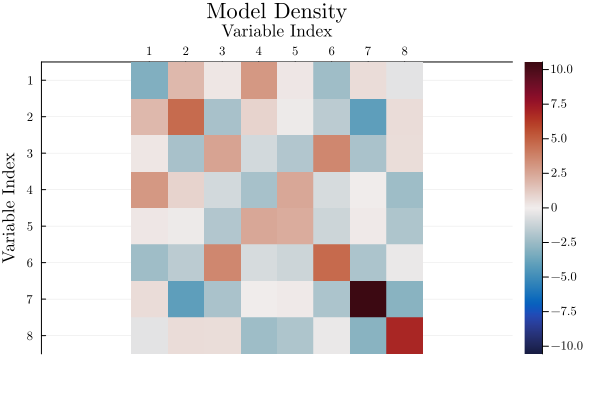
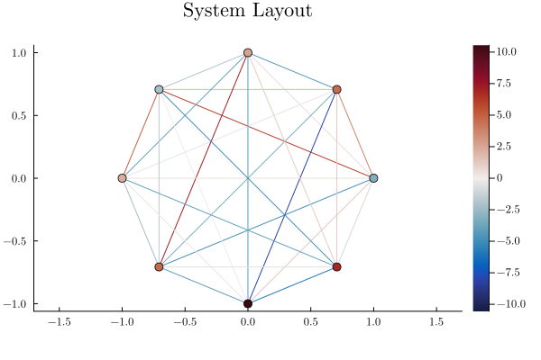
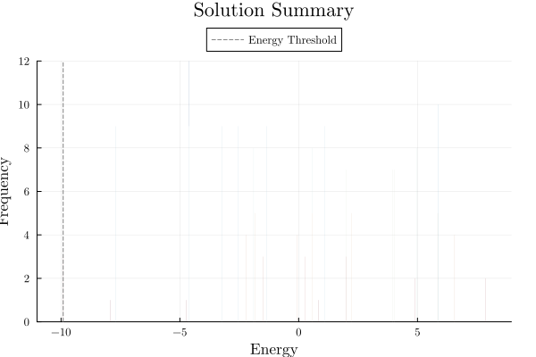
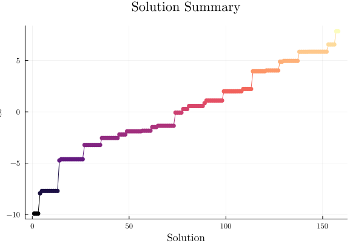

using QUBOTools
n = 8
# Generates a Sherrington-Kirpatrick model
model = QUBOTools.generate(QUBOTools.SK(n))
QUBOTools Model
▷ Sense ………………… Min
▷ Domain ……………… BoolDomain
▷ Variables ……… 8
Density:
▷ Linear ……………… 100.00%
▷ Quadratic ……… 100.00%
▷ Total ………………… 100.00%
There are no warm-start values.
There are no solutions available.
using Plots
plot(QUBOTools.ModelDensityPlot(model))
plot(QUBOTools.SystemLayoutPlot(model))
solution = magical_solution_method(model)
SampleSet{Float64, Int64} with 30 samples:
Sample{Float64, Int64}([0, 1, 1, 1, 1, 0, 1, 1], -9.911146163609363, 3)
Sample{Float64, Int64}([1, 0, 0, 0, 1, 1, 0, 1], -7.935866956098145, 1)
Sample{Float64, Int64}([1, 0, 0, 1, 0, 1, 0, 0], -7.70681348783963, 9)
Sample{Float64, Int64}([1, 0, 0, 1, 0, 0, 0, 1], -4.733655701706034, 1)
Sample{Float64, Int64}([1, 0, 1, 1, 0, 0, 0, 0], -4.614044366882826, 9)
Sample{Float64, Int64}([0, 1, 0, 0, 1, 1, 1, 1], -4.614044366882823, 3)
Sample{Float64, Int64}([0, 0, 0, 1, 1, 1, 0, 1], -3.2277890386941657, 9)
Sample{Float64, Int64}([1, 1, 1, 0, 0, 0, 0, 0], -2.549138683910149, 9)
Sample{Float64, Int64}([1, 0, 0, 0, 0, 1, 1, 0], -2.2058416368323686, 4)
⋮
λ = minimum(QUBOTools.value, solution) # threshold
plot(QUBOTools.EnergyFrequencyPlot(solution, λ))
plot(QUBOTools.EnergyDistributionPlot(solution))
